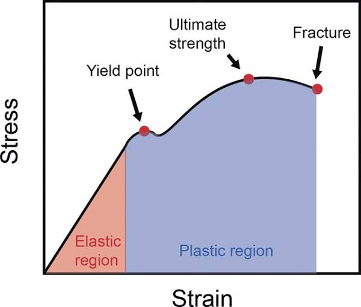

Elastic Deformation
Elastic deformation is temporary. When the load is released, the material returns to its exact original shape. In most metals, this behavior is linear and governed by Hooke's Law: σ = E · ε.
- Young's Modulus (E): The slope of the linear elastic region. It represents the material's stiffness (resistance to elastic deformation).
- Poisson's Ratio (ν): The ratio of lateral contraction to axial extension.
ν = -εx / εz.

Plastic Deformation
Beyond the elastic limit, stress is no longer proportional to strain, and the material experiences permanent, non-recoverable plastic deformation.
- Yield Strength (σY): The stress at which plastic deformation begins. Because the exact point is hard to pinpoint on a curve, an "offset method" is usually used by drawing a parallel line at a 0.002 strain offset. (Note: Steels have distinct upper and lower yield points, so the offset method is not required.)
- Ultimate Tensile Strength (UTS): The maximum stress sustained on the curve. After this point, deformation is confined to a small region (a phenomenon called Necking) until fracture.
- Ductility: A measure of the degree of plastic deformation a material sustains before fracture (measured via % elongation or % area reduction). Materials with virtually no plastic deformation are "brittle".
Work Hardening
Also known as strain hardening, this occurs when a material undergoes plastic deformation. If the load is removed and then reapplied, the material's Yield Strength actually increases! While this increases strength and hardness, it simultaneously decreases ductility and toughness.
Practice Exercises
Test your knowledge on Elastic and Plastic Deformation.
1. What does Young's Modulus (E) represent?
A) The point where the material breaks
B) The stiffness or resistance to elastic deformation
C) The ratio of lateral strain to axial strain
2. How is Yield Strength typically determined on a stress-strain curve for metals without a distinct yield point?
A) Drawing a parallel line at a 0.002 strain offset
B) Finding the absolute maximum peak of the curve
C) Measuring the total area under the curve
3. What happens to a material during "Work Hardening" (Strain Hardening)?
A) It becomes significantly more ductile
B) Its elastic modulus (E) increases dramatically
C) Its strength and hardness increase, but ductility decreases
4. What phenomenon occurs after a material reaches its Ultimate Tensile Strength (UTS)?
A) Yielding
B) Necking
C) Elastic Recovery
5. Which metal is known for having a distinct "upper and lower" yield point on its stress-strain curve?
A) Aluminum
B) Steel
C) Copper